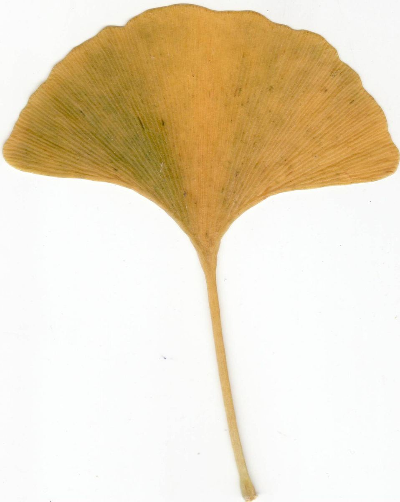
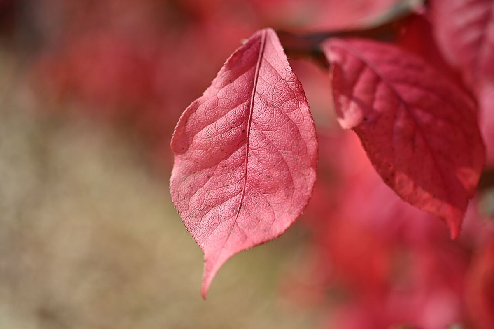
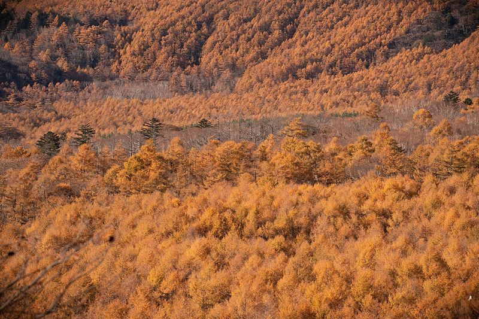
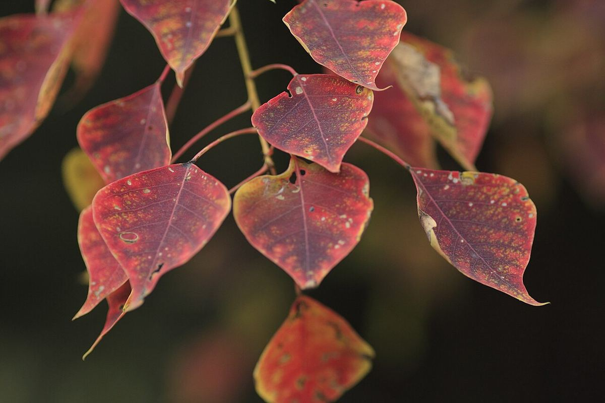

Photographs: Malene, Ninjatacoshell, Masaki Ikeda (池田正樹), Kjoonlee, Raita Futo and Zhangzhugang, Wikimedia Commons, CC BY-SA 3.0, CC BY 4.0, CC BY 2.0 and public domain.
Tokyo Momijigari 東京の紅葉狩り
Momijigari, written 紅葉狩り, means going out to look at autumn leaves. The first part, 紅葉 (momiji), means the red and gold leaves of autumn. The second part, 狩り (gari), means hunting. Nobody picks anything, though: the hunt is for the best colour.
The custom is more than a thousand years old. Court nobles went into the hills to see the maples, and wrote poems among them. In the Edo period it became an outing for ordinary townspeople, and guidebooks listed the best places to go.
This site is for a momijigari in Tokyo in late autumn. It shows where the colour is, and which trees make it. Below that is background on the city itself: its land, its people and how it grew.
Momijigari: where to look, and what you will see
- Tokyo in ColourWhere the autumn colour is in Tokyo and at the Fuji lakes, and when it peaks.
- The leavesA card for each tree you will meet, with photos, names, timing and lore.
Tokyo background
- The landWhy this plain, these rivers and this bay could carry a city, with three maps.
- People and power to 1590Who lived here before Ieyasu, and why he chose Edo, with a timeline.
- Growth of the cityGrowth rings on one map, from the first castle in 1457 to 1945, with a time slider. Rings for 1960 to 2020 are still to come.
- Population 1720–2025How many people lived in Tokyo, and what share of Japan that was.
- Tokyo in Five FacesThe walking map: the same streets in five periods, with a story at each stop.
Latest change: 25 October 2026. The site is now Tokyo Momijigari, at a new address. Autumn leaves come first; the history pages sit under Tokyo background.